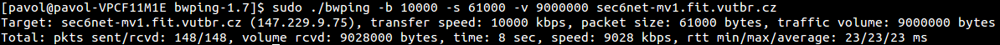

BWPing
Tento nástroj meria UDP priepustnos» prostredníctvom protokolu ICMP. Aplikácia posiela správy ICMP Echo Request na vzdialenú stanicu a prijíma ICMP Echo Reply. Musíme podotknú», ¾e mnohý ISP filtrujú ICMP správy, alebo aplikujú QoS. Tak¾e získané výsledky nemusia by» správne. V na¹om testovaní sme s týmto nástrojom nikdy nedosiahli nameranú priepustnos» zhodnú alebo podobnú s reálnou. Odmeraná priepustnos» bola v¾dy podstatne ni¾¹ia ako reálna. Výhodou tohto nástroja je pou¾itie v prípade, ak nemáme prístup na vzdialenú stanicu, voèi ktorej meriame priepustnos».Zdroje a základne spustenie
Domovská stránkaLink na stiahnutie - Pou¾itá verzia 1.7
Príklad základného spustenia:
$ bwping -b <èíslo> -s <èíslo> -v <èíslo> <adresa>
Uká¾ka testov
Test UDP priepustnosti do hodnoty 10 Mbps, veµkos» paketov 61 kbps a objem prenesených dát 9 MB.
$ bwping -b 10000 -s 61000 -v 9000000 adresa

Nekorektné správanie
Implementaèné chyby tohto nástroja neboli zaznamenané, jedná sa o jednoduchú utilitu, ktorá je dobre odladená. Ak pri testovaní nastavíme príli¹ veµké hodnoty prepínaèov vypí¹e hlá¹ku
bwping: sendto() failed: No buffer space available.
Toto je jediné zistené nekorektné správanie, ktoré mô¾e
znepríjemòova» testovanie.
Vybrané prepínaèe
| Parameter | Popis |
|---|---|
-b <èíslo> |
prenosová rýchlos» v kbps |
-s <èíslo> |
veµkos» paketu v bajtoch |
-v <èíslo> |
objem poslaných dát v bajtoch |
-r <èíslo> |
interval výpisov (implicitne vypnuté) |
-B <adresa> |
nastaví adresu odchádzajúcich paketov |